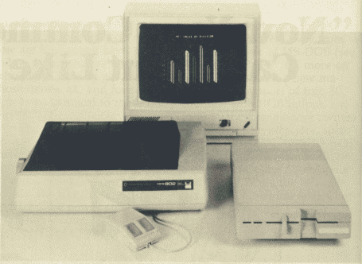
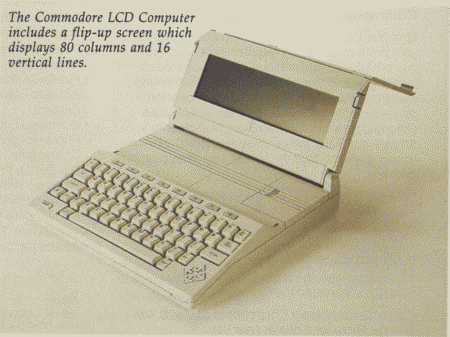

Lance Elko, Editor
Just when the doomsayers were looking like soothsayers, the home computer industry received a terrific boost from the two remaining "low end" manufacturers, Commodore and Atari, at the Winter CES. The new micros of 1985 redefine the market by bridging the gap between "personal" office computers and home computers.
A giant leap forward is what some observers called this year's Winter Consumer Electronics Show. Unlike the trade shows of the past two years, this CES, held January in Las Vegas, showcased some remarkable new personal computer technology.
Industry watchers had been anxiously awaiting new machines.
Surely, it was hoped, Commodore would offer some significant hardware, something more promising than the Plus/4 and the 16. And what of Jack Tramiel, founder of Commodore, now head of Atari? Would he deliver? The recent slump had victimized dozens of hardware and software companies, and contributed to the demise of Coleco's Adam. It could not continue.
Driving from the Las Vegas airport into town, it became obvious that this CES would be interesting. Along the way were billboards announcing that we were in "Atari country." And at Commodore's press conference on the opening night, press kits flashing "Bad News for IBM and Apple" were distributed. Despite the tendency towards the pie-in-the-sky advertising hype of many companies in this market, the "bad news" slogans and the swaggering "watch out - we're here" attitude from both Commodore and Atari may not miss the mark by much. The new machines represent a major step in changing the market and in significantly upgrading the way we compute.
Commodore announced two new machines, the 128 Personal Computer - externally expandable to 512K - and the portable Commodore LCD. Although Commodore would not announce prices for the new machines, Frank Leonardi, new vice president of marketing, said that the 128 would probably be less than $300 and the LCD less than $600. Commodore expects to release the 128 in April or May, and the LCD about one month later.
The 128, contrary to earlier reports that it was simply a 64 with an extra 64K of RAM, is being positioned by Commodore as three computers in one: a 64, a 128 with 80-columns and RGB (Red, Green, Blue so named because it isolates the primary color signals, providing a much sharper picture) output, and a CP/M machine. With three microprocessors - a 6510 (same as the 64), an 8502 chip, which is a slightly enhanced version of the 64's 6510, and a Z80 chip for CP/M - Commodore is "trying to meet everybody's wish list," notes Commodore software engineer Terry Ryan. Commodore 64 owners who upgrade don't lose their software (according to Commodore, over 6,000 commercial titles now exist for the 64), those who want a readable 80 columns for word processing or spreadsheets can use the 128 mode, and CP/M will appeal to those interested in more serious business applications. Getting from one mode to another is simple enough. From the 128 mode, type GO64. However, once in 64 mode, you must reboot the machine to get to the 128 mode. According to a Commodore engineer, not a single byte was changed in the Kernal because Commodore wanted perfect compatibility with all 64 software. Since GO128 would even in the smallest way change the operating system, they chose the safer route turn the machine on and type GO128. CP/M is accessed by inserting the CP/M 3.0 disk (CP/M is a disk-based operating system) which is included with the machine.
The 128 includes a much more powerful BASIC than Commodore owners have seen. Named BASIC 7.0 and accessible only in 128 mode, it's derived from the BASIC 4.0 found in the venerable CBM 8032 model, but adds some new disk commands as well as those of the Super Expander 64. Thus, the tedious POKEs required for sound and graphics on the 64 become unnecessary with this new machine. However, when in 128 mode, either 40 or 80 columns must be selected. With 40 columns, both sprites and the SID chip can be accessed, thus a Commodore 64 with 122K usable RAM. Graphics are not supported in 80-column mode. Also included is a built-in machine language monitor, an expanded version (direct access to disk is available) of the one packaged with the Plus/4.
In offering a more serious and powerful computer, Commodore is also featuring a new design. At first glance, one is reminded of an IBM-PC. It's a smart-looking, sleek machine with an off-white color. The keyboard has been thoughtfully designed, especially for those upgrading from a 64. With the exception of the function keys, the 64's keyboard is intact (see photo). But there's a lot more. A numeric keypad is included to the right of the main character keys. A top row, from left to right, includes ESCAPE, TAB, ALTernate, CAPS LOCK, HELP (similar in function to the help key of the Plus/4), LINE FEED, 40/80 DISPLAY, and NO SCROLL. Continuing on that row are four cursor keys, providing an alternative for those who never liked or got used to those on the 64, and four function keys, identical to those on the 64.
The 128 might be seen as an entry into the lower end of the business market currently dominated by the IBM-PC and its compatibles. While this is arguable, the fact that it seriously upgrades the power and flexibility of home computing is not. A huge array of CP/M-based software exists, although the PC market has moved away from CP/M in favor of MS-DOS (see "What Is CP/M?" for more on this). A plus for the new machine is its support of true 80 columns with RGB output. Unfortunately, Commodore owners with composite monitors, such as the 1701, 1702, or 1703, will have to upgrade to an RGB monitor to use the 80-columns of the 128. While the technology of the 128 is not new, Commodore is offering a solid product at a very affordable price.
In support of the 128, Commodore also has a new line of peripherals: the 1571 Disk Drive, the 1901 Monochrome Monitor, the 1902 RGBI/Composite Monitor, and the Commodore Mouse.  Although prices have not yet been set on any of these new products, they should be available at about the same time as the 128. The 1571 drive is double-sided (360K storage per disk) and far more intelligent than the 1541. Although it's serial and reads at the same speed as the 1541 in 64 mode, it's five times faster when used in 128 mode and almost 12 times faster in CP/M mode. Most CP/M software, regardless of format, can be used with the 1571. The drive is also compatible with the 64, Plus/4, and LCD.
The 1901 is a green screen 80-column monitor designed for business and productivity applications such as word processing, data base management, and spreadsheets. The 1902, ideally suited for the 128, contains a front video switch for composite or RGB display. In 64 mode, composite (40 X 25 columns) would be selected, thus emulating the display of the 1700 monitor series, and in 128 or CP/M mode, either composite or RGB (80 X 25 columns) is available.
The Commodore Mouse, functionally identical to Apple's mouse, provides an alternative to a joystick. No price and few details were announced, but it should be available for the 128 later this spring.
Commodore also announced the 1670 Modem, a 300/1200 baud modem which features auto answer/auto-dial, auto baud, and parity. (Auto baud determines the baud rate of another computer and automatically adjusts the rate of data transmission.) It's compatible with the 64, Plus/4, and 128. Although we didn't see the 1670 at the show, it should be available this spring. It may be priced at less than $100, a real bargain for a 1200-baud modem.
 Commodore's second major entry, the LCD, is a portable lap computer, with built-in software, modem, and flip-up screen. Commodore was showing only prototypes of this machine, so it was difficult to assess the software (word processor, file manager, spreadsheet, address book, scheduler, calculator, and memo pad), some of which was incomplete. However, we did note that the LCD screen is exceptionally fast, and the 80 X 16 column display is highly readable. The machine runs on four AA alkaline batteries or external power, and is easily transportable, weighing about three pounds.
The microprocessor used in the LCD is the 65C102, a modified and faster version of the 6502. Importantly, Commodore has included several I/O ports: RS-232, Centronics parallel, barcode, standard Commodore serial, and the 300-baud, auto answer/auto-dial modem. The LCD is programmable (BASIC 3.6 is included), and it stores files permanently. If peripheral file storage is appropriate, the LCD is compatible with the 1571 and 1541 disk drives. Curiously, Commodore was showing Sony-standard 3-1/2" serial disk drives in use with the LCD, but little information was available on these obviously raw prototypes. If Commodore delivers the LCD for under $600, it should have a very strong competitive edge in the "notebook" computer market.
Several other important announcements were made at Commodore's CES press conference. One of the most heartening, for Commodore owners, was the establishment of a national service network which includes 160 RCA service centers, about 800 Sears stores, and nearly 1300 other outlets which include computer stores. Computers and peripherals in or beyond warranty can be serviced at these locations beginning in March.
Although a lot of software for the 64 was announced by third party companies (see "CES Perspective: Much More For The 64"), Commodore introduced only two new packages, both for the 128. Jane, developed by the Arktronics Corporation, is icon-based productivity software featuring an integrated word processor, spreadsheet, and filing system. It's designed for use with a joystick or the Commodore Mouse. Reminiscent of Macintosh software, Jane uses pop-up menus and windows. For 80-column CP/M mode on the 128, Commodore announced the Perfect Series, produced by Thorn EMI. This integrated software line, which includes Perfect Writer, Perfect Calc, and Perfect Filer, has been on the market in MS-DOS format for the IBM-PC and compatibles for some time. No prices were announced for Jane or the Perfect Series.
While Commodore has an impressive array of new hardware, Atari has the jump on offering a new technology to the low-end market. Jack Tramiel and dozens of ex-Commodorians (collectively self-identified as the "New Atari" - although others may prefer the "Old Commodore") unveiled six new computers, seven printers, three disk drives, and four monitors.
Atari's new computers represent two new series, the XE line (four machines upwardly compatible with the Atari 800 and 800 XL), and the real showstoppers, the 130ST and the 520ST. The ST machines, driven by the 16/32 bit Motorola 68000 microprocessor, the same chip found in the Macintosh, can basically be understood as color Macintoshes with a choice of input devices (keyboard, joystick, or mouse) and several more features. For $599, the 520ST offers 512K RAM, a built-in hard disk interface (for $399 you can get an extra 15 megabyte hard disk for storage, the equivalent of about 90 Commodore 1541 disks), three screen graphics modes (640 X 400 pixels in hi-res), a three-voice sound generator with a MIDI interface for communication with external electronic instruments such as synthesizers, and a GEM operating system, which controls graphics features such as icons, windows, and drop-down menus.
The 130ST is a 128K version of the same machine and is priced at $399. The XE series includes the 65XE, a 64K enhanced version of the 800XL, to sell for $99; the 130XE, a 128K version for under $200; the 65XEP, a transportable version of the 65XE which includes a built-in monochrome monitor, 3½-inch disk drive, and battery pack, to sell for under $400; and the 65XEM, essentially a 65XE with an eight-voice AMY sound chip that includes 64 oscillators. Reportedly, the AMY chip can be programmed to simulate any musical instrument. This machine will be offered for under $200.
The support peripherals for all of Atari's new machines are also priced very low in keeping with Jack Tramiel's marketing philosophy. Release date for Atari's new hardware is April or May. (For more details on Atari's new products, see the CES report in April COMPUTE!).
With Atari and Commodore as the two remaining gladiators in the low-end arena, 1985 will prove to be an interesting year. Both Commodore and Jack Tramiel are notorious for underselling the competition, and the new hardware prices, while surprisingly low, are not really unexpected. But, while both companies are claiming Apple and IBM as targets, they're also aiming at each other. One source told us that the Atari ST is really Commodore's Amiga (also with a 68000 microprocessor), that some of the engineers brought to Atari from Commodore by Jack Tramiel knew the Amiga well enough to produce a replica. But Commodore denies this, hinting that the Amiga is more powerful and different than the ST. All intrigue aside, we'll see the Amiga in the market later this year. (For details on the Amiga, see "The Editor's Notes" in the November 1984 GAZETTE.)
We're sure to see more from Commodore and Atari at the Summer CES in June, and possibly even before then. But their announcements at this CES are significant if only for one reason: much more power at much lower cost.
| This page has been created by Sami Rautiainen. | |
| Read the small print. | Last updated September 05, 2020. |
{kind=link}